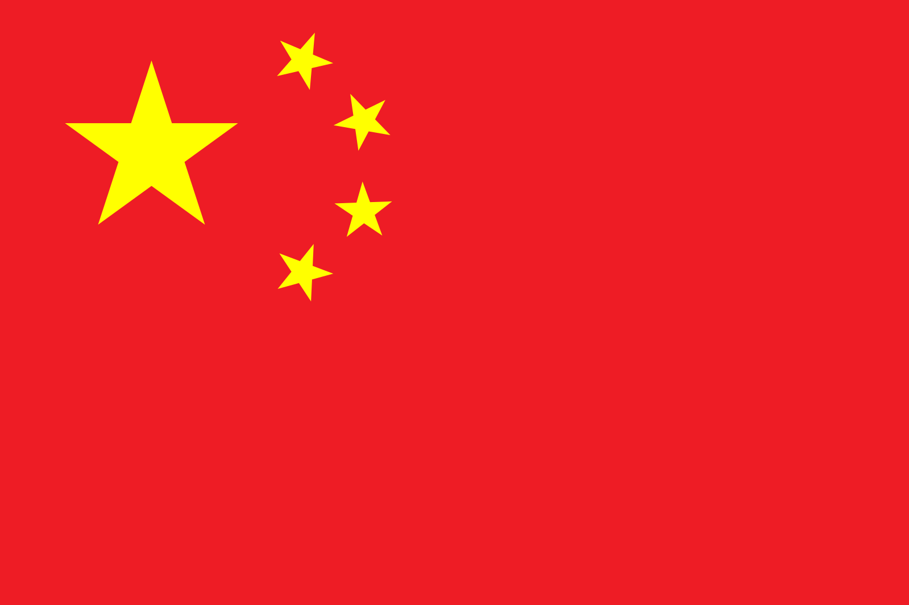

China, officially the People's Republic of China (PRC), is a country in East Asia. It is the world's most populous country, with a population of around 1.4 billion.[8] Covering approximately 9.6 million square kilometers (3.7 million mi2), it is the world's third or fourth-largest country by area.[l] As a one-party state led by the Chinese Communist Party (CCP), the country is officially divided into 23 provinces,[m][18] five autonomous regions, four direct-controlled municipalities (Beijing, Tianjin, Shanghai, and Chongqing), and the special administrative regions of Hong Kong and Macau.
China emerged as one of the world's first civilizations, in the fertile basin of the Yellow River in the North China Plain. China was one of the world's foremost economic powers for most of the two millennia from the 1st until the 19th century.[19] For millennia, China's political system was based on absolute hereditary monarchies, or dynasties, beginning with the Xia dynasty in 21st century BCE. Since then, China has expanded, fractured, and re-unified numerous times. In the 3rd century BCE, the Qin reunited core China and established the first Chinese empire. The succeeding Han dynasty (206 BCE–220 CE) saw some of the most advanced technology at that time, including papermaking and the compass, along with agricultural and medical improvements. The invention of gunpowder and movable type in the Tang dynasty (618–907) and Northern Song Dynasty (960–1127) completed the Four Great Inventions. Tang culture spread widely in Asia, as the new Silk Route brought traders to as far as Mesopotamia and the Horn of Africa. The Qing Empire, China's last dynasty, suffered heavy losses to foreign imperialism. The Chinese monarchy collapsed in 1912 with the 1911 Revolution, when the Republic of China (ROC) replaced the Qing dynasty. China was invaded by the Empire of Japan during World War II. The Chinese Civil War resulted in a division of territory in 1949 when the CCP led by Mao Zedong established the People's Republic of China on mainland China while the Kuomintang-led ROC government retreated to the island of Taiwan.[n] Both the PRC and the ROC currently claim to be the sole legitimate government of China, resulting in an ongoing dispute even after the United Nations recognized the PRC as the government to represent China at all UN conferences in 1971.
Since the establishment of the People's Republic of China in 1949, China has been a unitary one-party socialist republic, and is one of the few remaining socialist states. The country is a permanent member of the United Nations Security Council since replacing the ROC in 1971. China is a founding member of several multilateral and regional cooperation organizations such as the Asian Infrastructure Investment Bank, the New Development Bank, the Shanghai Cooperation Organization, and the Regional Comprehensive Economic Partnership, and is a member of the BRICS nations and the East Asia Summit. It ranks among the lowest in international measurements of civil liberties, government transparency, freedom of the press, freedom of religion and ethnic minorities and practises mass censorship and mass surveillance of its citizens with the Great Firewall controlling access to the internet. The country has engaged in human rights abuses, political and religious repression since the PRC's foundation, such as the ongoing Uyghur genocide. China has violently suppressed peaceful demonstrations including the 1989 Tiananmen Square protests and 2019–20 Hong Kong protests. China continues to pose a global threat to the human rights of people outside of China, including political refugees who have left China due to persecution.[20] After economic reforms in 1978, and its entry into the World Trade Organization in 2001, China's economy became the second-largest country by nominal GDP in 2010 and grew to the largest in the world by PPP in 2014. China is the world's fastest-growing major economy,[21] the second-wealthiest nation in the world, and the world's largest manufacturer and exporter. The nation has the world's largest standing army—the People's Liberation Army—the second-largest defense budget, and is a recognized nuclear-weapons state. China has been characterized as an emerging superpower due to its large economy and powerful military.
The word "China" has been used in English since the 16th century; however, it was not a word used by the Chinese themselves during this period in time. Its origin has been traced through Portuguese, Malay, and Persian back to the Sanskrit word Chīna, used in ancient India.[22] "China" appears in Richard Eden's 1555 translation[o] of the 1516 journal of the Portuguese explorer Duarte Barbosa.[p][22] Barbosa's usage was derived from Persian Chīn (چین), which was in turn derived from Sanskrit Cīna (चीन).[27] Cīna was first used in early Hindu scripture, including the Mahābhārata (5th century BCE) and the Laws of Manu (2nd century BCE).[28] In 1655, Martino Martini suggested that the word China is derived ultimately from the name of the Qin dynasty (221–206 BCE).[29][28] Although this derivation is still given in various sources,[30] the origin of the Sanskrit word is a matter of debate, according to the Oxford English Dictionary.[22] Alternative suggestions include the names for Yelang and the Jing or Chu state.[28][31] The official name of the modern state is the "People's Republic of China" (simplified Chinese: 中华人民共和国; traditional Chinese: 中華人民共和國; pinyin: Zhōnghuá Rénmín Gònghéguó). The shorter form is "China" Zhōngguó (中国; 中國) from zhōng ("central") and guó ("state"),[q] a term which developed under the Western Zhou dynasty in reference to its royal demesne.[r] It was then applied to the area around Luoyi (present-day Luoyang) during the Eastern Zhou and then to China's Central Plain before being used as an occasional synonym for the state under the Qing.[33] It was often used as a cultural concept to distinguish the Huaxia people from perceived "barbarians".[33] The name Zhongguo is also translated as "Middle Kingdom" in English.[35] China (PRC) is sometimes referred to as the Mainland when distinguishing the ROC from the PRC.
Archaeological evidence suggests that early hominids inhabited China 2.25 million years ago.[40] The hominid fossils of Peking Man, a Homo erectus who used fire,[41] were discovered in a cave at Zhoukoudian near Beijing; they have been dated to between 680,000 and 780,000 years ago.[42] The fossilized teeth of Homo sapiens (dated to 125,000–80,000 years ago) have been discovered in Fuyan Cave in Dao County, Hunan.[43] Chinese proto-writing existed in Jiahu around 7000 BCE,[44] at Damaidi around 6000 BCE,[45] Dadiwan from 5800 to 5400 BCE, and Banpo dating from the 5th millennium BCE. Some scholars have suggested that the Jiahu symbols (7th millennium BCE) constituted the earliest Chinese writing system.[44]
According to Chinese tradition, the first dynasty was the Xia, which emerged around 2100 BCE.[46] The Xia dynasty marked the beginning of China's political system based on hereditary monarchies, or dynasties, which lasted for a millennium.[47] The dynasty was considered mythical by historians until scientific excavations found early Bronze Age sites at Erlitou, Henan in 1959.[48] It remains unclear whether these sites are the remains of the Xia dynasty or of another culture from the same period.[49] The succeeding Shang dynasty is the earliest to be confirmed by contemporary records.[50] The Shang ruled the plain of the Yellow River in eastern China from the 17th to the 11th century BCE.[51] Their oracle bone script (from c. 1500 BCE)[52][53] represents the oldest form of Chinese writing yet found[54] and is a direct ancestor of modern Chinese characters.[55] The Shang was conquered by the Zhou, who ruled between the 11th and 5th centuries BCE, though centralized authority was slowly eroded by feudal warlords. Some principalities eventually emerged from the weakened Zhou, no longer fully obeyed the Zhou king, and continually waged war with each other in the 300-year Spring and Autumn period. By the time of the Warring States period of the 5th–3rd centuries BCE, there were only seven powerful states left.[56]
The Warring States period ended in 221 BCE after the state of Qin conquered the other six kingdoms, reunited China and established the dominant order of autocracy. King Zheng of Qin proclaimed himself the First Emperor of the Qin dynasty. He enacted Qin's legalist reforms throughout China, notably the forced standardization of Chinese characters, measurements, road widths (i.e., cart axles' length), and currency. His dynasty also conquered the Yue tribes in Guangxi, Guangdong, and Vietnam.[57] The Qin dynasty lasted only fifteen years, falling soon after the First Emperor's death, as his harsh authoritarian policies led to widespread rebellion.[58][59] Following a widespread civil war during which the imperial library at Xianyang was burned,[s] the Han dynasty emerged to rule China between 206 BCE and CE 220, creating a cultural identity among its populace still remembered in the ethnonym of the Han Chinese.[58][59] The Han expanded the empire's territory considerably, with military campaigns reaching Central Asia, Mongolia, South Korea, and Yunnan, and the recovery of Guangdong and northern Vietnam from Nanyue. Han involvement in Central Asia and Sogdia helped establish the land route of the Silk Road, replacing the earlier path over the Himalayas to India. Han China gradually became the largest economy of the ancient world.[61] Despite the Han's initial decentralization and the official abandonment of the Qin philosophy of Legalism in favor of Confucianism, Qin's legalist institutions and policies continued to be employed by the Han government and its successors.[62] Map showing the expansion of Han dynasty in the 2nd century BC After the end of the Han dynasty, a period of strife known as Three Kingdoms followed,[63] whose central figures were later immortalized in one of the Four Classics of Chinese literature. At its end, Wei was swiftly overthrown by the Jin dynasty. The Jin fell to civil war upon the ascension of a developmentally disabled emperor; the Five Barbarians then invaded and ruled northern China as the Sixteen States. The Xianbei unified them as the Northern Wei, whose Emperor Xiaowen reversed his predecessors' apartheid policies and enforced a drastic sinification on his subjects, largely integrating them into Chinese culture. In the south, the general Liu Yu secured the abdication of the Jin in favor of the Liu Song. The various successors of these states became known as the Northern and Southern dynasties, with the two areas finally reunited by the Sui in 581. The Sui restored the Han to power through China, reformed its agriculture, economy and imperial examination system, constructed the Grand Canal, and patronized Buddhism. However, they fell quickly when their conscription for public works and a failed war in northern Korea provoked widespread unrest.[64][65] Under the succeeding Tang and Song dynasties, Chinese economy, technology, and culture entered a golden age.[66] The Tang Empire retained control of the Western Regions and the Silk Road,[67] which brought traders to as far as Mesopotamia and the Horn of Africa,[68] and made the capital Chang'an a cosmopolitan urban center. However, it was devastated and weakened by the An Lushan Rebellion in the 8th century.[69] In 907, the Tang disintegrated completely when the local military governors became ungovernable. The Song dynasty ended the separatist situation in 960, leading to a balance of power between the Song and Khitan Liao. The Song was the first government in world history to issue paper money and the first Chinese polity to establish a permanent standing navy which was supported by the developed shipbuilding industry along with the sea trade.[70] A detail from Along the River During the Qingming Festival, a 12th-century painting showing everyday life in the Song dynasty's capital, Bianjing (present-day Kaifeng) Between the 10th and 11th centuries, the population of China doubled in size to around 100 million people, mostly because of the expansion of rice cultivation in central and southern China, and the production of abundant food surpluses. The Song dynasty also saw a revival of Confucianism, in response to the growth of Buddhism during the Tang,[71] and a flourishing of philosophy and the arts, as landscape art and porcelain were brought to new levels of maturity and complexity.[72][73] However, the military weakness of the Song army was observed by the Jurchen Jin dynasty. In 1127, Emperor Huizong of Song and the capital Bianjing were captured during the Jin–Song Wars. The remnants of the Song retreated to southern China.[74] The 13th century brought the Mongol conquest of China. In 1271, the Mongol leader Kublai Khan established the Yuan dynasty; the Yuan conquered the last remnant of the Song dynasty in 1279. Before the Mongol invasion, the population of Song China was 120 million citizens; this was reduced to 60 million by the time of the census in 1300.[75] A peasant named Zhu Yuanzhang overthrew the Yuan in 1368 and founded the Ming dynasty as the Hongwu Emperor. Under the Ming dynasty, China enjoyed another golden age, developing one of the strongest navies in the world and a rich and prosperous economy amid a flourishing of art and culture. It was during this period that admiral Zheng He led the Ming treasure voyages throughout the Indian Ocean, reaching as far as East Africa.[76] The Qing conquest of the Ming and expansion of the empire In the early years of the Ming dynasty, China's capital was moved from Nanjing to Beijing. With the budding of capitalism, philosophers such as Wang Yangming further critiqued and expanded Neo-Confucianism with concepts of individualism and equality of four occupations.[77] The scholar-official stratum became a supporting force of industry and commerce in the tax boycott movements, which, together with the famines and defense against Japanese invasions of Korea (1592–1598) and Manchu invasions led to an exhausted treasury.[78] In 1644, Beijing was captured by a coalition of peasant rebel forces led by Li Zicheng. The Chongzhen Emperor committed suicide when the city fell. The Manchu Qing dynasty, then allied with Ming dynasty general Wu Sangui, overthrew Li's short-lived Shun dynasty and subsequently seized control of Beijing, which became the new capital of the Qing dynasty.
The Qing dynasty, which lasted from 1644 until 1912, was the last imperial dynasty of China. Its conquest of the Ming (1618–1683) cost 25 million lives and the economy of China shrank drastically.[79] After the Southern Ming ended, the further conquest of the Dzungar Khanate added Mongolia, Tibet and Xinjiang to the empire.[80] The centralized autocracy was strengthened to crack down on anti-Qing sentiment with the policy of valuing agriculture and restraining commerce, the Haijin ("sea ban"), and ideological control as represented by the literary inquisition, causing social and technological stagnation.[81][82] In the mid-19th century, the dynasty experienced Western imperialism in the Opium Wars with Britain and France. China was forced to pay compensation, open treaty ports, allow extraterritoriality for foreign nationals, and cede Hong Kong to the British[83] under the 1842 Treaty of Nanking, the first of the Unequal Treaties. The First Sino-Japanese War (1894–95) resulted in Qing China's loss of influence in the Korean Peninsula, as well as the cession of Taiwan to Japan.[84] The Eight-Nation Alliance invaded China to defeat the anti-foreign Boxers and their Qing backers. The image shows a celebration ceremony inside the Chinese imperial palace, the Forbidden City after the signing of the Boxer Protocol in 1901. The Qing dynasty also began experiencing internal unrest in which tens of millions of people died, especially in the White Lotus Rebellion, the failed Taiping Rebellion that ravaged southern China in the 1850s and 1860s and the Dungan Revolt (1862–77) in the northwest. The initial success of the Self-Strengthening Movement of the 1860s was frustrated by a series of military defeats in the 1880s and 1890s.[citation needed] In the 19th century, the great Chinese diaspora began. Losses due to emigration were added to by conflicts and catastrophes such as the Northern Chinese Famine of 1876–79, in which between 9 and 13 million people died.[85] The Guangxu Emperor drafted a reform plan in 1898 to establish a modern constitutional monarchy, but these plans were thwarted by the Empress Dowager Cixi. The ill-fated anti-foreign Boxer Rebellion of 1899–1901 further weakened the dynasty. Although Cixi sponsored a program of reforms, the Xinhai Revolution of 1911–12 brought an end to the Qing dynasty and established the Republic of China.[citation needed] Puyi, the last Emperor of China, abdicated in 1912.
On 1 January 1912, the Republic of China was established, and Sun Yat-sen of the Kuomintang (the KMT or Nationalist Party) was proclaimed provisional president.[86] However, the presidency was later given to Yuan Shikai, a former Qing general who in 1915 proclaimed himself Emperor of China. In the face of popular condemnation and opposition from his own Beiyang Army, he was forced to abdicate and re-establish the republic.[87] After Yuan Shikai's death in 1916, China was politically fragmented. Its Beijing-based government was internationally recognized but virtually powerless; regional warlords controlled most of its territory.[88][89] In the late 1920s, the Kuomintang, under Chiang Kai-shek, the then Principal of the Republic of China Military Academy, was able to reunify the country under its own control with a series of deft military and political manoeuvrings, known collectively as the Northern Expedition.[90][91] The Kuomintang moved the nation's capital to Nanjing and implemented "political tutelage", an intermediate stage of political development outlined in Sun Yat-sen's San-min program for transforming China into a modern democratic state.[92][93] The political division in China made it difficult for Chiang to battle the communist People's Liberation Army (PLA), against whom the Kuomintang had been warring since 1927 in the Chinese Civil War. This war continued successfully for the Kuomintang, especially after the PLA retreated in the Long March, until Japanese aggression and the 1936 Xi'an Incident forced Chiang to confront Imperial Japan.[94] Chiang Kai-shek and Mao Zedong toasting together in 1946 following the end of World War II The Second Sino-Japanese War (1937–1945), a theater of World War II, forced an uneasy alliance between the Kuomintang and the PLA. Japanese forces committed numerous war atrocities against the civilian population; in all, as many as 20 million Chinese civilians died.[95] An estimated 40,000 to 300,000 Chinese were massacred in the city of Nanjing alone during the Japanese occupation.[96] During the war, China, along with the UK, the US, and the Soviet Union, were referred to as "trusteeship of the powerful"[97] and were recognized as the Allied "Big Four" in the Declaration by United Nations.[98][99] Along with the other three great powers, China was one of the four major Allies of World War II, and was later considered one of the primary victors in the war.[100][101] After the surrender of Japan in 1945, Taiwan, including the Pescadores, was returned to Chinese control. China emerged victorious but war-ravaged and financially drained. The continued distrust between the Kuomintang and the Communists led to the resumption of civil war. Constitutional rule was established in 1947, but because of the ongoing unrest, many provisions of the ROC constitution were never implemented in mainland China.
Major combat in the Chinese Civil War ended in 1949 with the Communist Party in control of most of mainland China, and the Kuomintang retreating offshore, reducing its territory to only Taiwan, Hainan, and their surrounding islands. On 21 September 1949, Communist Party Chairman Mao Zedong proclaimed the establishment of the People's Republic of China with a speech at the First Plenary Session of the Chinese People's Political Consultative Conference[103][104][105] followed by a public proclamation and celebration in Tiananmen Square.[106] In 1950, the People's Liberation Army captured Hainan from the ROC[107] and incorporated Tibet.[108] However, remaining Kuomintang forces continued to wage an insurgency in western China throughout the 1950s.[109] Deng Xiaoping with U.S. President Jimmy Carter in 1979 The regime consolidated its popularity among the peasants through land reform, which included the execution of between 1 and 2 million landlords.[110] China developed an independent industrial system and its own nuclear weapons.[111] The Chinese population increased from 550 million in 1950 to 900 million in 1974.[112] However, the Great Leap Forward, an idealistic massive reform project, resulted in an estimated 15 to 35 million deaths between 1958 and 1961, mostly from starvation.[113][114][115] In 1966, Mao and his allies launched the Cultural Revolution, sparking a decade of political recrimination and social upheaval that lasted until Mao's death in 1976. In October 1971, the PRC replaced the Republic in the United Nations, and took its seat as a permanent member of the Security Council.[116] After Mao's death, the Gang of Four was quickly arrested by Hua Guofeng and held responsible for the excesses of the Cultural Revolution. Elder Deng Xiaoping took power in 1978, and instituted significant economic reforms. The Party loosened governmental control over citizens' personal lives, and the communes were gradually disbanded in favor of working contracted to households. This marked China's transition from a planned economy to a mixed economy with an increasingly open-market environment.[117] China adopted its current constitution on 4 December 1982. In 1989, the suppression of student protests in Tiananmen Square brought condemnations and sanctions against the Chinese government from various foreign countries.[118] Jiang Zemin, Li Peng and Zhu Rongji led the nation in the 1990s. Under their administration, China's economic performance pulled an estimated 150 million peasants out of poverty and sustained an average annual gross domestic product growth rate of 11.2%.[119][better source needed][120][better source needed] The country joined the World Trade Organization in 2001, and maintained its high rate of economic growth under Hu Jintao and Wen Jiabao's leadership in the 2000s. However, the growth also severely impacted the country's resources and environment,[121][122] and caused major social displacement.[123][124] Chinese Communist Party general secretary Xi Jinping has ruled since 2012 and has pursued large-scale efforts to reform China's economy [125][126] (which has suffered from structural instabilities and slowing growth),[127][128][129] and has also reformed the one-child policy and prison system,[130] as well as instituting a vast anti corruption crackdown.[131] In 2013, China initiated the Belt and Road Initiative, a global infrastructure investment project.[132] The COVID-19 pandemic broke out in Wuhan, Hubei in 2019.
The territory of China lies between latitudes 18° and 54° N, and longitudes 73° and 135° E. The geographical center of China is marked by the Center of the Country Monument at 35°50′40.9″N 103°27′7.5″E. China's landscapes vary significantly across its vast territory. In the east, along the shores of the Yellow Sea and the East China Sea, there are extensive and densely populated alluvial plains, while on the edges of the Inner Mongolian plateau in the north, broad grasslands predominate. Southern China is dominated by hills and low mountain ranges, while the central-east hosts the deltas of China's two major rivers, the Yellow River and the Yangtze River. Other major rivers include the Xi, Mekong, Brahmaputra and Amur. To the west sit major mountain ranges, most notably the Himalayas. High plateaus feature among the more arid landscapes of the north, such as the Taklamakan and the Gobi Desert. The world's highest point, Mount Everest (8,848 m), lies on the Sino-Nepalese border.[136] The country's lowest point, and the world's third-lowest, is the dried lake bed of Ayding Lake (−154 m) in the Turpan Depression.[137] Li River near Guilin, Guangxi China's climate is mainly dominated by dry seasons and wet monsoons, which lead to pronounced temperature differences between winter and summer. In the winter, northern winds coming from high-latitude areas are cold and dry; in summer, southern winds from coastal areas at lower latitudes are warm and moist.[138] A major environmental issue in China is the continued expansion of its deserts, particularly the Gobi Desert.[139][140] Although barrier tree lines planted since the 1970s have reduced the frequency of sandstorms, prolonged drought and poor agricultural practices have resulted in dust storms plaguing northern China each spring, which then spread to other parts of East Asia, including Japan and Korea. China's environmental watchdog, SEPA, stated in 2007 that China is losing 4,000 km2 (1,500 sq mi) per year to desertification.[141] Water quality, erosion, and pollution control have become important issues in China's relations with other countries. Melting glaciers in the Himalayas could potentially lead to water shortages for hundreds of millions of people.[142] According to academics, in order to limit climate change in China to 1.5 °C (2.7 °F) electricity generation from coal in China without carbon capture must be phased out by 2045.[143] Official government statistics about Chinese agricultural productivity are considered unreliable, due to exaggeration of production at subsidiary government levels.[144][145] Much of China has a climate very suitable for agriculture and the country has been the world's largest producer of rice, wheat, tomatoes, eggplant, grapes, watermelon, spinach, and many other crops.
China is one of 17 megadiverse countries,[147] lying in two of the world's major biogeographic realms: the Palearctic and the Indomalayan. By one measure, China has over 34,687 species of animals and vascular plants, making it the third-most biodiverse country in the world, after Brazil and Colombia.[148] The country signed the Rio de Janeiro Convention on Biological Diversity on 11 June 1992, and became a party to the convention on 5 January 1993.[149] It later produced a National Biodiversity Strategy and Action Plan, with one revision that was received by the convention on 21 September 2010.[150] China is home to at least 551 species of mammals (the third-highest such number in the world),[151] 1,221 species of birds (eighth),[152] 424 species of reptiles (seventh)[153] and 333 species of amphibians (seventh).[154] Wildlife in China share habitat with and bear acute pressure from the world's largest population of Homo sapiens. At least 840 animal species are threatened, vulnerable or in danger of local extinction in China, due mainly to human activity such as habitat destruction, pollution and poaching for food, fur and ingredients for traditional Chinese medicine.[155] Endangered wildlife is protected by law, and as of 2005, the country has over 2,349 nature reserves, covering a total area of 149.95 million hectares, 15 percent of China's total land area.[156][better source needed] The Baiji was confirmed extinct on 12 December 2006.[157] China has over 32,000 species of vascular plants,[158] and is home to a variety of forest types. Cold coniferous forests predominate in the north of the country, supporting animal species such as moose and Asian black bear, along with over 120 bird species.[159] The understory of moist conifer forests may contain thickets of bamboo. In higher montane stands of juniper and yew, the bamboo is replaced by rhododendrons. Subtropical forests, which are predominate in central and southern China, support a high density of plant species including numerous rare endemics. Tropical and seasonal rainforests, though confined to Yunnan and Hainan Island, contain a quarter of all the animal and plant species found in China.[159] China has over 10,000 recorded species of fungi,[160] and of them, nearly 6,000 are higher fungi.
In recent decades, China has suffered from severe environmental deterioration and pollution.[162][163] While regulations such as the 1979 Environmental Protection Law are fairly stringent, they are poorly enforced, as they are frequently disregarded by local communities and government officials in favor of rapid economic development.[164] China is the country with the second highest death toll because of air pollution, after India. There are approximately 1 million deaths caused by exposure to ambient air pollution.[165][166] China is the world's largest carbon dioxide emitter,[167] and has been ranked as the 13th largest in emissions per capita.[168] The country also has significant water pollution problems: 8.2% of China's rivers had been polluted by industrial and agricultural waste in 2019, and were unfit for use.[169][170] China had a 2018 Forest Landscape Integrity Index mean score of 7.14/10, ranking it 53rd globally out of 172 countries.[171] However, China is the world's leading investor in renewable energy and its commercialization, with $52 billion invested in 2011 alone;[172][173][174] it is a major manufacturer of renewable energy technologies and invests heavily in local-scale renewable energy projects.[175][176][177] By 2015, over 24% of China's energy was derived from renewable sources, while most notably from hydroelectric power: a total installed capacity of 197 GW makes China the largest hydroelectric power producer in the world.[178][179] China also has the largest power capacity of installed solar photovoltaics system and wind power system in the world.[180][181] Greenhouse gas emissions by China are the world's largest,[168] as is renewable energy in China.
The People's Republic of China is the second-largest country in the world by land area[183] after Russia, and is the third largest by total area, after Russia and Canada.[t] China's total area is generally stated as being approximately 9,600,000 km2 (3,700,000 sq mi).[184][better source needed] Specific area figures range from 9,572,900 km2 (3,696,100 sq mi) according to the Encyclopædia Britannica,[185] to 9,596,961 km2 (3,705,407 sq mi) according to the UN Demographic Yearbook,[4] and the CIA World Factbook.[7] China has the longest combined land border in the world, measuring 22,117 km (13,743 mi) from the mouth of the Yalu River (Amnok River) to the Gulf of Tonkin.[7] China borders 14 nations, more than any other country except Russia, which also borders 14.[186] China extends across much of East Asia, bordering Vietnam, Laos, and Myanmar (Burma) in Southeast Asia; India, Bhutan, Nepal, Afghanistan, and Pakistan[u] in South Asia; Tajikistan, Kyrgyzstan and Kazakhstan in Central Asia; and Russia, Mongolia, and North Korea in Inner Asia and Northeast Asia. Additionally, China shares maritime boundaries with South Korea, Japan, Vietnam, and the Philippines.